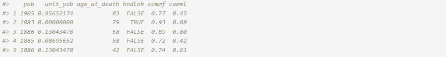
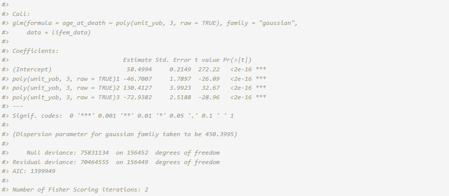
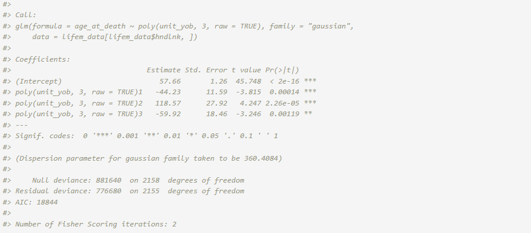
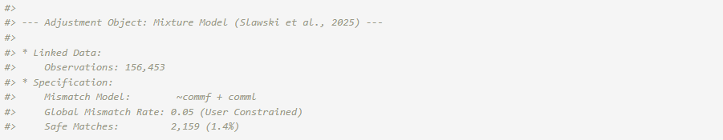
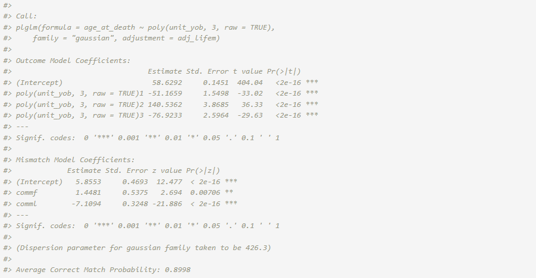
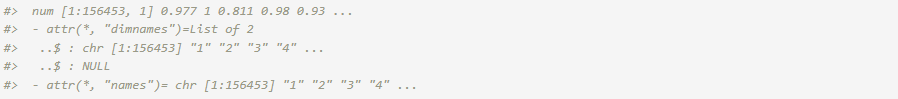
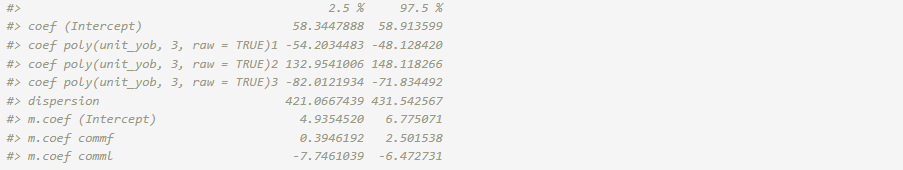
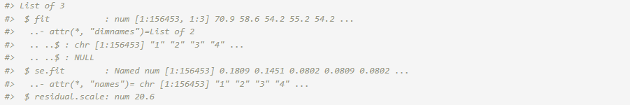
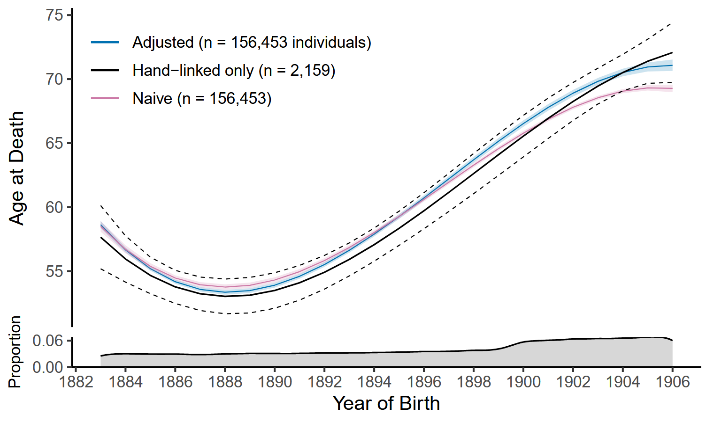

Longevity Analysis with LIFE-M Data
Source:vignettes/articles/longevity-analysis.Rmd
longevity-analysis.Rmd

1. Linked Data Set: LIFE-M Project
The LIFE-M (Longitudinal Intergenerational Family Electronic Micro-Database) project is multi-generational data from the 20th century that was gathered from several data sources including vital records and decennial censuses. We examine the relationship between age at death and year of birth using linked birth and death certificates on individuals in Ohio (Slawski et al. (2024)). The source of the death certificates and their collection periods influence the trend in age at death over the years of birth. We focus on birth cohorts where average longevity tends to increase. The linkage of certificate records for LIFE-M was generated in two distinct ways. A fraction of certificates was randomly sampled to be “hand-linked at some level”. These are high quality links that were manually established by trained research assistants. The remaining records were “purely machine-linked” based on predictive modeling methods (automated probabilistic record linkage without clerical review) (Bailey et al. (2022)).
The LIFE-M data set of interest contains records of linked data on
156,453 individuals from Ohio who were born between 1883 and 1906. Of
these records, 2,159 were hand-linked (\sim 1.4% of the records) while the remaining
were purely machine-linked. Although the purely machine-linked records
are more inclined to have mismatch errors, the records with mismatched
data are unknown. The LIFE-M team reports that the expected mismatch
rate among machine-linked records is approximately 5%. Records for the
first 5 individuals in the linked data set (lifem_data) are
displayed below. Each line represents a distinct individual.
url <- "https://github.com/postlink-group/postlink/releases/download/v0.1.0/lifem.rds"
lifem_data <- readRDS(url(url, "rb"))
head(lifem_data, n = 5) # 156,453 records w/ 6 variables
The age at death (in years) age_at_death is the response
variable (Y_{A}) and the year of birth
(rescaled to the unit interval for analysis) unit_yob is
used as a predictor variable (X_{B}).
We assume a Gaussian regression model for the predictor-response
relationship and use a cubic polynomial to describe the non-linear
relationship observed for the birth cohorts.
In the following sections, we walk through the overall workflow for
the secondary analysis of the LIFE-M data set using an adjustment method
for mismatch errors. For reference, alternative approaches using
standard stats::glm() function in R are included in
comparison.
Note: The postlink package includes demo data based on this full data set. For an interactive version of this article using the demo data, please refer to the Colab notebook linked above.
2. Naive Approach
The Gaussian regression model that does not adjust for possible
linkage errors can be estimated using the standard lm() or
glm() function.
fit_naive <- glm(age_at_death ~ poly(unit_yob, 3, raw = TRUE),
data = lifem_data, family = "gaussian")
summary(fit_naive)
3. Hand-Linked Only Approach
Alternatively, the analysis could be limited to the records that were hand-linked. However, this procedure discards the majority of the linked data and suffers from significant loss of power.
fit_hl <- glm(age_at_death ~ poly(unit_yob, 3, raw = TRUE),
data = lifem_data[lifem_data$hndlnk,], family = "gaussian")
summary(fit_hl)
4. Adjustment Approach
Instead, the Gaussian regression model can be fit according to the
framework in Slawski et al. (2024). This method uses the
entire linked data but adjusts for potential mismatch errors. Among the
existing options, we focus on this PLDA method based on information
present on the underlying record linkage process: the linkage type
(hndlnk), first and last name commonness scores
(commf and comml), and overall expected
mismatch rate (i.e., not available per record). We assume that records
which were hand linked at some level (hndlnk is
TRUE) are correct matches. For the other records, the
correct match indicator (C) is
considered unknown and modelled via logistic regression with first and
last name commonness scores considered predictors (\mathbf{Z}). These scores are readily
accessible and relevant to match status since names were identifiers
primarily used to machine link certificates by the LIFE-M team. Scores
range from zero (least common) to one (most common). They were
calculated as the ratio between the log count of the name in the 1940
Census and the log count of the most frequently used name in the 1940
Census. Furthermore, the expected mismatch rate of 5% is incorporated on
the logit scale. For mismatched records, we assume the marginal
distribution of the age at death follows a Gaussian distribution and
estimate the parameters using the full data.
We postulate a two-component mixture model for l = 1, \dots, 156453:
\begin{aligned} &\hspace{3ex} Y_{l}| X_l, \{C_{l}=1\} \sim N(\beta_0 + \beta_1 X_l + \beta_2 X_l^2 + \beta_3 X_l^3, \sigma^2) \\ &\hspace{3ex} Y_{l}, \{C_{l}=0\} \sim N(\mu, \tau^2) \\ &\hspace{3ex} C_l| \texttt{commf}_l, \texttt{comml}_l \sim \text{Bernoulli}\Big( \frac{\exp(\gamma_0 + \gamma_1 \texttt{commf}_l + \gamma_2 \texttt{comml}_l)}{1+\exp(\gamma_0 + \gamma_1 \texttt{commf}_l + \gamma_2 \texttt{comml}_l)}\Big) \end{aligned}
In the estimation procedure, we can restrict the estimates to ensure that the mismatch rate is smaller than 5%,
\begin{aligned} &\hspace{3ex} C_l = 1 \text{ for hand-linked at some level records} \\ &\hspace{3ex} -\frac{1}{n}\sum_{l=1}^n \mathbf{Z}_l^T \boldsymbol{\gamma} \leq \text{logit}(0.05) \end{aligned}
There are two types of data that we should consider. The first type of data is the outcome and covariates of interest. The second type of data include information about the linkage, such as overall rate of false positives, indicators for units that are certain to be true links, and algorithm generated likelihood of links or measures used during the linking process. To handle these two types of data components, we define a linkage quality structure, and use that linkage quality information in the estimation and inference algorithm.
To adjust for potential mismatch errors during secondary analysis, we can use postlink as follows.
I. Adjustment Specification: We first instantiate an
Adjustment object with information on the linkage quality using
the available paradata. The object includes a safe.matches
argument, which designate certain units as matched without errors. We
assume hand-linked records (hndlnk) are correct matches.
For records that we are not certain, the latent correct-match indicator
is modeled using logistic regression that include first and last name
commonness scores (commf and comml) as
predictors. Lastly, we can include the overall mismatch rate (5%) that
is used as a constraint for the Expectation-Maximization (EM) algorithm
used in the framework (Slawski et al. (2024)).
adj_lifem <- adjMixture(
linked.data = lifem_data,
m.formula = ~ commf + comml,
m.rate = 0.05,
safe.matches = hndlnk
)
print(adj_lifem)
II. Estimation and Inference. We pass the resulting
Adjustment object to the plglm() wrapper. This
merges the paradata with the formula for the model of specific interest
to implement the linkage errors adjusted estimates,
fit_adj <- plglm(
age_at_death ~ poly(unit_yob, 3, raw = TRUE), family = "gaussian",
adjustment = adj_lifem
)
summary(fit_adj)
The average correct match rate refers to the mean of the posterior
correct match probabilities for all of the records. The probability for
each record is accessible through the fit object in the
match.prob vector. For safe matches, the probability is set
to 1.
str(fit_adj$match.prob)
For the model of primary interest, the confint()
function provides confidence intervals for the coefficients. The default
confidence level is 0.95.
confint(fit_adj)
The predict() function computes the predicted ages at
death for the 1883 - 1906 birth cohorts along with point-wise standard
errors and 95\% confidence intervals.
The predictions type is set to “link” (i.e., linear predictors) by
default.

5. Comparison
The predictions after adjustment for potential mismatch errors are visualized in Figure 1, along with the naive and hand-linked only analysis results.

While the hand-linked only approach is based on matches assumed to be correct, its results are characterized by relatively large prediction intervals. The naive approach uses the entire linked data but assumes perfect record linkage. Although the 95% point-wise confidence intervals are narrower, the predictions diverge from those of the hand-linked only approach from around 1897 and fall below its point-wise confidence interval after 1904. Adjustment yields estimates of comparable scale to the other two approaches. It uses the entire linked data and provides results with lower uncertainty. Also, for the later cohorts, the results align more with those expected from correct matches.